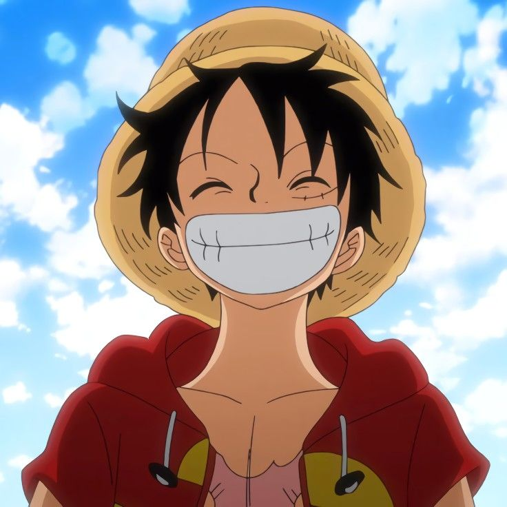

About Me
As one of the Four Emperors, and at the young age of 19, Luffy is one of the four most powerful pirates in the world. He captains the Straw Hat Pirates, holding the greatest authority over a mighty and diverse crew consisting of several infamous members, many of whom are extremely powerful in their own right. Luffy has a tremendous amount of influence over his crewmates, so much so that they all trust him with their lives, despite his reckless behavior and, in some cases, even because of it.
Cool Fights

Luffy Vs Kaido
Luffy’s fight against Kaido encapsulates everything that made Luffy’s previous fights so difficult and takes things to another level. Kaido initially easily defeats Luffy at Kuri after which Luffy is sent to Udon where he learns Ryou and gets stronger. However, Luffy is defeated again at Onigashima with Kaido casting his unconscious form from the top of Onigashima to the waters below.

Luffy Vs Katakuri
Katakuri is the strongest member of Big Mom’s crew outside Big Mom herself, so his fight with Luffy was one of the most difficult Luffy has ever been a part of. Katakuri’s Mochi-Mochi Devil Fruit abilities enable him to transform his body to dodge any attacks and his Observation Haki lets him see into the future to know his opponent’s next moves before they do them.

Luffy Vs Doflamingo
Doflamingo ranks among One Piece’s most despicable villains, so Luffy’s final battle against him was incredibly satisfying. It was also incredibly long, as Doflamingo’s powerful String-String Devil Fruit forced Luffy to go all out to fight him. Luffy’s Gear Fourth Boundman form even took too much out of him at one point, forcing him to rely on the help of the people of Dressrosa to buy him the time he needed to recover.

Luffy Vs Lucci
Luffy’s fight with Lucci is probably his most iconic fight from before the time skip for good reason. It is a long and intense battle that features Luffy using a brand-new fighting style and also has him knocked down and seemingly defeated multiple times. But every time he falls he gets right back up again against all odds.

Luffy Vs Marineford
Luffy was present during the Summit War at Marineford, and he fought a variety of different foes including One Piece's three Naval Admirals. The fight includes many impressive moments, including Luffy's first public use of Conqueror's Haki which infamously knocked out 50,000 marines. That said, many of the fighters at Marineford were much stronger than Luffy was and easily defeated him.

Luffy Vs Magellan
This is one of the shortest fights in the series, but it is also one of the few fights in One Piece that Luffy lost completely. Magellan was the warden of the prison Impel Down, and his Venom-Venom Devil fruit abilities greatly harm his opponents if they touch the globs of poison he generates and manipulates.